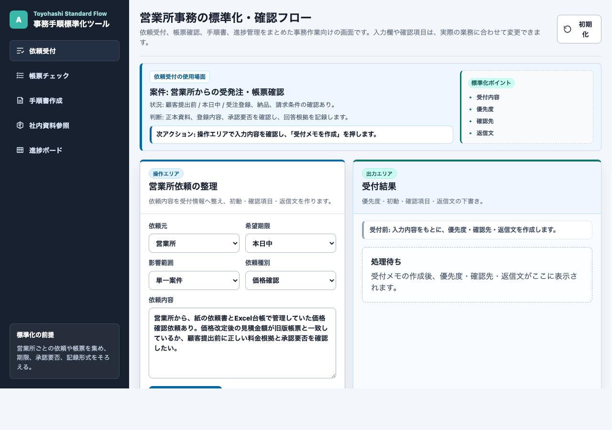
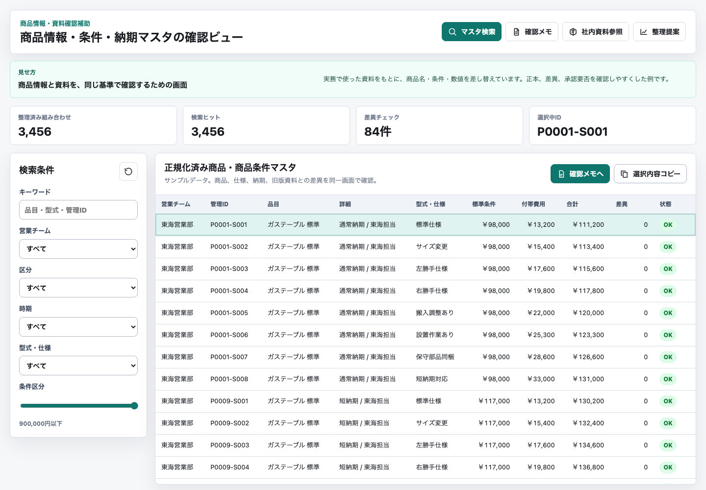
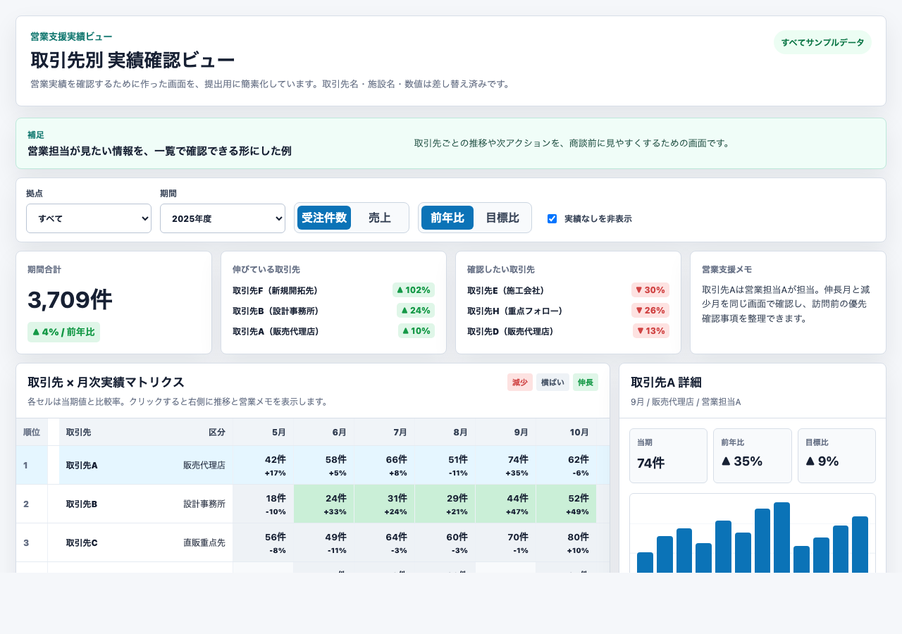
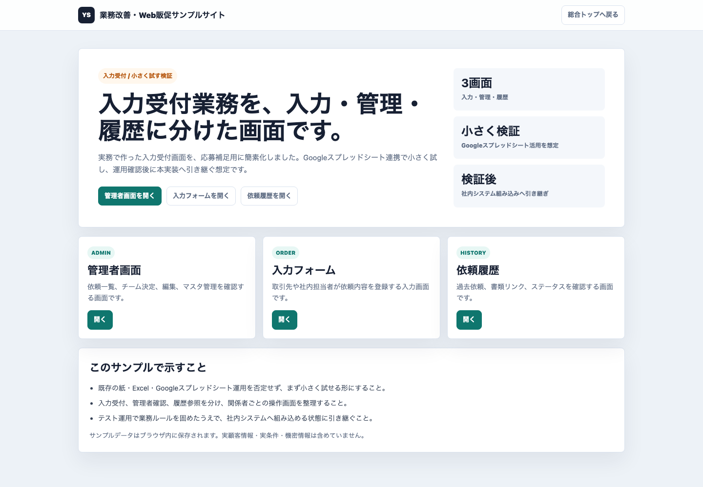
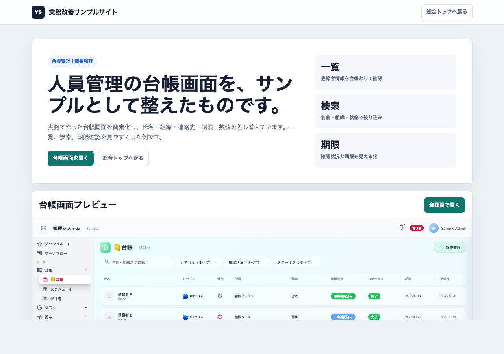

AI活用
情報整理・回答下書きサンプル
社内資料や問い合わせ内容を整理し、回答や確認事項の下書きにする画面です。
- 複雑な情報を入力しやすい項目へ分解
- 資料の探し方や確認観点をそろえる
- FAQやWebコンテンツ改善にも転用可能
実務で作った画面や資料をもとに、情報整理、検索、見える化、下書き作成の例として簡素化しました。Webコンテンツ改善や販促施策にも転用できる考え方として見ていただけます。
各カードから個別画面を開けます。
WEBアプリのサンプル一覧です。

社内資料や問い合わせ内容を整理し、回答や確認事項の下書きにする画面です。

商品情報や条件を一覧化し、探しやすくした例です。



多い情報を一覧化し、検索やステータス確認をしやすくした画面です。
どの画面も、まず情報を小さく分けて、Web上で見やすい形に整えることを意識しています。
情報を目的や対象者ごとに分ける。
必要な項目や表示順をそろえる。
一覧や検索で見つけやすくする。
AIも使いながら文章や回答案を作る。
Webページや販促資料へ展開する。
画面内の社名や数値はサンプル用に差し替えています。実顧客情報や現職の機密情報は含めていません。
AIやWebを使った情報整理の例です。Web施策や販促改善に転用できる機会があれば、こうした形で準備できます。